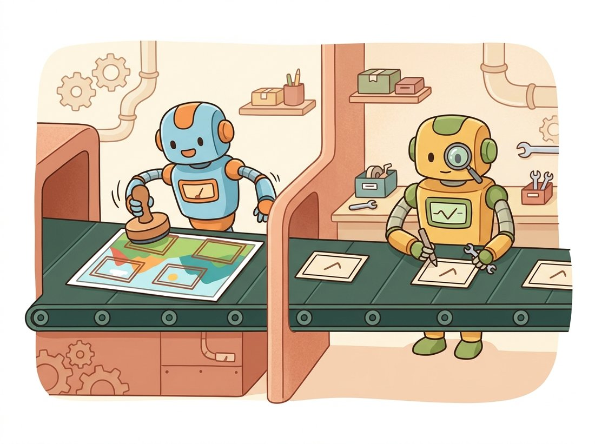

"My method is simple. First I draw two thousand rectangles where something might be. Then I look at each one very carefully and decide what it is. It is slow, it is thorough, and it has never once been accused of missing the obvious."
A Region Proposal Network With a Strong Work Ethic
Two-stage detectors solve the variable-output problem by splitting it in two: a first stage proposes a manageable set of regions that probably contain objects, and a second stage classifies and refines each proposed region as if it were an ordinary image patch. This propose-then-classify structure is the oldest deep-detection idea and still the most accurate template. The R-CNN family's three-step evolution is a clean lesson in removing redundancy: R-CNN ran a CNN on every proposal separately (crippling slow); Fast R-CNN ran the backbone once on the whole image and pooled features per proposal (much faster); Faster R-CNN replaced the external proposal algorithm with a small learnable region proposal network sharing the same backbone, making the whole detector a single end-to-end network. By the end of this section you will understand anchors, RoI Align, and the two-headed second stage, and you will run a pretrained Faster R-CNN in a few lines.
In Section 23.1 we established that a detector must emit a variable-length set of (box, class, confidence) triples and that mAP grades that set. The R-CNN family was the first deep approach to produce such a set, and it did so with an idea borrowed from common sense: do not try to classify every possible box in an image (there are millions), instead first find a few thousand regions that look like they might hold an object, then spend your expensive classifier only on those. That two-stage decomposition, propose then classify, is the subject of this section, and it remains the accuracy benchmark that the faster families of later sections are measured against. The illustration below pictures the two stages as a tidy assembly line.

1. R-CNN: Region Proposals Meet Deep Features Beginner
The original R-CNN (Girshick et al., 2014) combined three off-the-shelf pieces. First, a class-agnostic region proposal algorithm called Selective Search generated roughly 2,000 candidate boxes per image by merging superpixels of similar color and texture, a purely classical grouping method in the spirit of the classical segmentation of Chapter 11. Second, each proposed region was cropped, warped to the CNN's fixed input size ($227 \times 227$ for the AlexNet-style network the original used), and pushed through a CNN (an ImageNet-pretrained classifier, exactly the transfer learning idea of Chapter 21) to extract a feature vector. Third, a per-class linear support vector machine scored each feature vector, and a separate linear regressor refined the box coordinates.
R-CNN nearly doubled the previous best detection mAP on PASCAL VOC, which is why it mattered. But it was painfully slow: 2,000 forward passes of a deep CNN per image, with no computation shared between overlapping proposals, took tens of seconds per image at test time and required caching gigabytes of features to disk during training. The next two papers are the story of removing that waste, and the lesson generalizes far beyond detection: when an expensive computation is repeated on overlapping inputs, share it.
2. Fast R-CNN: Share the Backbone, Pool the Features Intermediate
Fast R-CNN's insight was that the 2,000 proposals all live in the same image, so the backbone should run once on the whole image to produce a single convolutional feature map, and each proposal should simply read out the portion of that map covering its region. Why does the feature have to be a fixed size at all? Because the second-stage head ends in fully-connected layers, and a fully-connected layer has a fixed weight matrix that only accepts a fixed-length input; proposals, however, come in every size and aspect ratio. The operation that bridges that mismatch, reading a fixed-size feature from a variable-size region, is RoI pooling (region-of-interest pooling): project the proposal box onto the feature map, divide it into a fixed grid (say $7 \times 7$), and max-pool within each grid cell, producing a $7 \times 7$ feature regardless of the proposal's size. That fixed-size feature then goes to a small head with two outputs: a softmax over classes (including a background class) and a per-class box refinement.
The arithmetic of that one change is the aha of the whole family. R-CNN pushed all 2,000 overlapping crops through the deep backbone separately, so two boxes sharing 90 percent of their pixels still paid for the backbone twice; Fast R-CNN runs the backbone exactly once on the full image and lets all 2,000 proposals read out of that single feature map, turning roughly 2,000 backbone passes into one. That is the difference between tens of seconds and a fraction of a second per image, from the same network, with the only new idea being "do not recompute what you can share." Sharing the backbone also let the whole second stage train end-to-end with a single multi-task loss. That loss is the template every detector since has used: a classification term plus a localization term, the second applied only to non-background boxes.
Here $p$ is the predicted class distribution, $u$ is the true class ($0$ for background), $t^u$ is the predicted box refinement for the true class, $v$ is the target refinement, $[u \ge 1]$ is $1$ for any object class and $0$ for background (so background boxes contribute no localization loss), and $\lambda$ balances the two terms. $L_{\text{loc}}$ is a smooth-L1 (Huber) loss on the four box-offset coordinates, which is robust to the outliers that a plain L2 would over-penalize.
RoI pooling quantizes twice: once when it rounds the proposal's floating-point coordinates to the integer feature-map grid, and again when it divides into pooling cells. Those roundings shift features by up to half a cell, which barely affects coarse classification but badly hurts the pixel-precise tasks to come. Mask R-CNN replaced it with RoI Align, which keeps the coordinates floating-point and uses bilinear interpolation to sample feature values at the exact sub-pixel locations, never rounding. This single change improved mask quality substantially and is now used even in box-only detectors. It is the same lesson as RoI pooling itself, do not throw away precision you do not have to, and it is why torchvision.ops.roi_align is the default you should reach for.
3. Anchors: Turning a Grid into Box Candidates Intermediate
Faster R-CNN's contribution was to replace the slow external Selective Search with a learnable proposal network, and to make that work the field introduced the anchor box, an idea so central that the next two sections are partly defined by their relationship to it. An anchor is a reference box of a fixed size and aspect ratio, placed at every spatial location of the feature map. At each location you place several anchors (typically three scales times three aspect ratios, so nine anchors per location), tiling the image with a dense, fixed set of candidate boxes. The network does not predict boxes from nothing; it predicts, for each anchor, two things: an objectness score (does this anchor contain an object?) and four offsets that nudge the anchor toward a nearby ground-truth box.
The offsets are parameterized relative to the anchor, which keeps the regression targets small and scale-invariant. For an anchor with center $(x_a, y_a)$, width $w_a$, and height $h_a$, the predicted box $(x, y, w, h)$ comes from network outputs $(t_x, t_y, t_w, t_h)$ via
Multiplying $t_x$ by the anchor width $w_a$ is what makes the targets scale-invariant: a raw nudge of "ten pixels right" means a lot for a tiny anchor and almost nothing for a huge one, but a nudge of "0.1 anchor-widths right" means the same proportional shift at every size, so the network can reuse one set of weights across scales. The exponential on width and height guarantees a positive size and lets the network express large size changes with small outputs. Anchors are matched to ground truth by IoU (the metric from Section 23.1): an anchor with IoU above $0.7$ to some ground-truth box is a positive example, below $0.3$ is a negative (background) example, and the rest are ignored during training. Figure 23.2.1 shows nine anchors tiled at one feature-map location.
4. Faster R-CNN: The Region Proposal Network Intermediate
The region proposal network (RPN) is a tiny convolutional head that slides over the shared backbone feature map and, at every location, outputs the objectness scores and box offsets for the $k$ anchors there. It is a fully convolutional, class-agnostic object detector in its own right; its only job is to say "object here, roughly this box" or "background". Its top-scoring proposals (after a non-maximum suppression pass, described below) become the regions that the Fast R-CNN second stage then classifies into actual categories and refines. Because the RPN shares the backbone with the second stage, proposals are nearly free, and the whole detector is one network trained with a combined RPN-plus-detection loss. Figure 23.2.2 traces the data flow.
Both stages produce many overlapping boxes per object, so both apply non-maximum suppression (NMS): sort boxes by score, keep the top box, discard every remaining box whose IoU with it exceeds a threshold (commonly $0.5$ to $0.7$), and repeat. NMS is the duplicate-killer that the evaluation rule of Section 23.1 demanded, and it is the one piece of every detector in this section and the next that is not learned. The from-scratch implementation below is worth reading, because removing this hand-tuned step is precisely what DETR achieves in Section 23.5.
# Greedy non-maximum suppression: repeatedly keep the highest-scoring box and
# discard every remaining box that overlaps it more than iou_thresh.
# This is the one hand-tuned, non-learned step in a classic detector.
import torch
def nms(boxes, scores, iou_thresh=0.5):
"""boxes: (N, 4) corner format. scores: (N,). Returns kept indices, by score."""
keep = []
idxs = scores.argsort(descending=True) # highest score first
while idxs.numel() > 0:
i = idxs[0].item()
keep.append(i)
if idxs.numel() == 1:
break
# IoU of the kept box against all remaining candidates.
x1 = boxes[idxs[1:], 0].clamp(min=boxes[i, 0])
y1 = boxes[idxs[1:], 1].clamp(min=boxes[i, 1])
x2 = boxes[idxs[1:], 2].clamp(max=boxes[i, 2])
y2 = boxes[idxs[1:], 3].clamp(max=boxes[i, 3])
inter = (x2 - x1).clamp(min=0) * (y2 - y1).clamp(min=0)
area_i = (boxes[i, 2] - boxes[i, 0]) * (boxes[i, 3] - boxes[i, 1])
area_r = ((boxes[idxs[1:], 2] - boxes[idxs[1:], 0]) *
(boxes[idxs[1:], 3] - boxes[idxs[1:], 1]))
iou = inter / (area_i + area_r - inter)
idxs = idxs[1:][iou <= iou_thresh] # drop boxes that overlap the kept one
return torch.tensor(keep)
boxes = torch.tensor([[10, 10, 50, 50], [12, 11, 51, 49], [90, 90, 130, 130]],
dtype=torch.float)
scores = torch.tensor([0.9, 0.8, 0.7])
print(nms(boxes, scores, 0.5).tolist()) # [0, 2] (box 1 suppressed as a duplicate of 0)
nms loop sorts by score, keeps the top box, and drops every remaining candidate whose IoU exceeds iou_thresh; box 1 overlaps the higher-scoring box 0 and is removed, while the distant box 2 survives. Every two-stage and one-stage detector runs a step like this; only DETR avoids it.You will rarely implement Faster R-CNN from scratch; torchvision ships it with COCO-pretrained weights and a fused, batched NMS. The whole detector, backbone, FPN, RPN, RoI Align, two-stage head, and NMS, is one call. (The FPN, or feature pyramid network, is a multi-scale neck that fuses coarse deep features with fine shallow ones so the detector sees objects of every size; it is built up in detail in Section 23.3, and here you simply inherit it from the pretrained weights.)
# Load a COCO-pretrained Faster R-CNN from torchvision and run inference.
# The single constructor pulls in the backbone, FPN, RPN, RoI Align, the
# two-stage head, and a fused batched NMS; we just threshold the scores.
import torch
from torchvision.models.detection import (
fasterrcnn_resnet50_fpn_v2, FasterRCNN_ResNet50_FPN_V2_Weights)
weights = FasterRCNN_ResNet50_FPN_V2_Weights.DEFAULT
model = fasterrcnn_resnet50_fpn_v2(weights=weights).eval()
preprocess = weights.transforms() # resize + normalize, COCO-style
img = torch.rand(3, 800, 800) # a CHW float image in [0, 1]
with torch.no_grad():
out = model([preprocess(img)])[0] # dict: boxes, labels, scores
keep = out["scores"] > 0.5
print(out["boxes"][keep].shape, out["labels"][keep].tolist())
weights.transforms() even carries the exact COCO preprocessing, letting you focus on thresholding the returned boxes, labels, and scores.Roughly 1,500 lines of detector code, plus the custom NMS above, collapse into one constructor. The library handles the anchor generation across FPN levels, the proposal sampling and balancing during training, RoI Align, the batched class-wise NMS, and the COCO label map. The weights.transforms() object even carries the exact preprocessing the model was trained with, so you cannot accidentally feed it the wrong normalization.
Who: a medical-imaging group screening retinal photographs for microaneurysms, tiny dark lesions a few pixels across, 2022. Situation: they first tried a fast one-stage detector because the radiologists wanted near-real-time feedback during clinics. Problem: the one-stage model's recall on the smallest lesions was unacceptable; missing a microaneurysm can mean missing early diabetic retinopathy, so even a small false-negative rate was a clinical non-starter. Decision: they switched to a Faster R-CNN with an FPN backbone and a low RPN objectness threshold, deliberately trading speed for the two-stage pipeline's higher recall on small objects, and accepted running detection asynchronously rather than live. Result: small-lesion recall rose enough to clear their clinical validation bar, and the slightly higher latency was invisible because results were attached to the patient record rather than shown live. Lesson: the two-stage family is slower but its separate proposal stage, especially with a feature pyramid, still leads on small-object recall; when a miss is far more costly than a delay, the older accurate template is the right tool, exactly the APs (small-object) gap that Section 23.1 told you to ask about.
Two-stage detection is older than the one-stage and transformer families, yet its core idea, refine a coarse proposal in a second pass, keeps returning in modern guise. Cascade R-CNN (2018, and still a strong 2024 baseline) stacks several second-stage heads at increasing IoU thresholds, each refining the previous, and remains near the top of the COCO accuracy charts. The DINO detector of Section 23.5, the first DETR-family model to beat the best convolutional detectors, can be read as a learned two-stage method: its query-selection step proposes, and its decoder layers iteratively refine, just like a cascade. And open-vocabulary detectors such as Detic and OWL-ViT often keep a region-proposal stage and only swap the classifier for a CLIP text-image matcher, letting them detect categories never seen in the box annotations. The propose-then-classify decomposition has outlived every prediction of its obsolescence.
The "R" in R-CNN stands for "Regions", not "Recurrent", a confusion that has tripped up countless newcomers who assumed any "R-something" network must involve recurrence. The naming proved durable enough that Mask R-CNN, the segmentation extension you will meet in Chapter 24, kept the letter even though it adds a mask head rather than any new region machinery. The family tree is R-CNN, Fast R-CNN, Faster R-CNN, Mask R-CNN, with the adjectives racing ahead of the architecture changes.
5. Why It Is Accurate but Slow Advanced
The two-stage design is accurate for a structural reason: the second stage sees only a few hundred high-quality proposals, each already roughly localized, and can spend a heavyweight per-region head deciding the exact class and tightening the box. The proposals also rebalance the data; the RPN winnows millions of anchors down to a few thousand, and a sampling step keeps the ratio of foreground to background examples in the second stage near $1{:}3$ rather than the $1{:}1000$ that a one-stage detector must confront. That balance is why two-stage detectors did not need the focal loss that Section 23.3 invents to rescue one-stage training.
The cost is the same structure. The per-region head runs hundreds of times per image, the proposal and NMS steps are sequential and hard to fully parallelize, and the whole pipeline has more moving parts (anchor matching, proposal sampling, two NMS passes) to tune. A Faster R-CNN runs at perhaps 5 to 15 frames per second on a strong GPU, fine for asynchronous analysis but too slow for a phone, a drone, or a self-driving car's perception loop. That speed ceiling is exactly the gap the one-stage detectors of the next section were built to close, and the focal-loss innovation that let them close it without surrendering accuracy is the story we turn to now.
The Fast R-CNN multi-task loss multiplies the localization term by $[u \ge 1]$, switching it off for background proposals. In two or three sentences, explain why regressing a box for a background region is meaningless and what would go wrong with training if you removed that indicator and asked the network to localize background "objects" too. Relate your answer to what the box-refinement head is actually being asked to predict.
Write a function that, given an image size, a backbone stride (say 16), and a set of anchor scales and aspect ratios, generates every anchor box for the whole feature map in corner format. Then, given a single ground-truth box, compute the IoU of every anchor against it (reuse your vectorized iou_matrix from Exercise 23.1.2) and report the best IoU and how many anchors clear the 0.7 positive threshold. Experiment with anchor scales that are too small or too large for the object and observe the best IoU collapse; this is the manual tuning that anchor-free detectors in Section 23.4 were invented to eliminate.
Run the pretrained torchvision Faster R-CNN from the library shortcut on a busy image with many overlapping objects (a crowd, a parking lot). Re-run NMS on its raw outputs at IoU thresholds of 0.3, 0.5, and 0.7 and count the surviving boxes at each. Explain the trade-off: a low NMS threshold suppresses aggressively (fewer duplicates but risks merging two genuinely adjacent objects into one), while a high threshold keeps more boxes (better for crowds but more duplicates). Connect this to a real scenario where merging two close objects would be a serious failure, such as counting people in a queue.